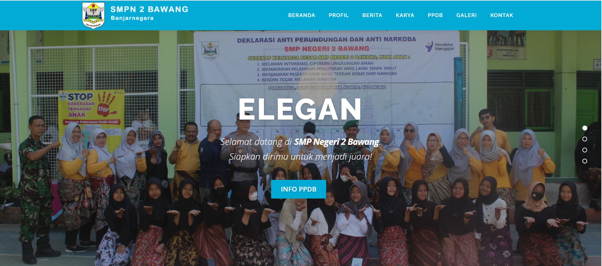
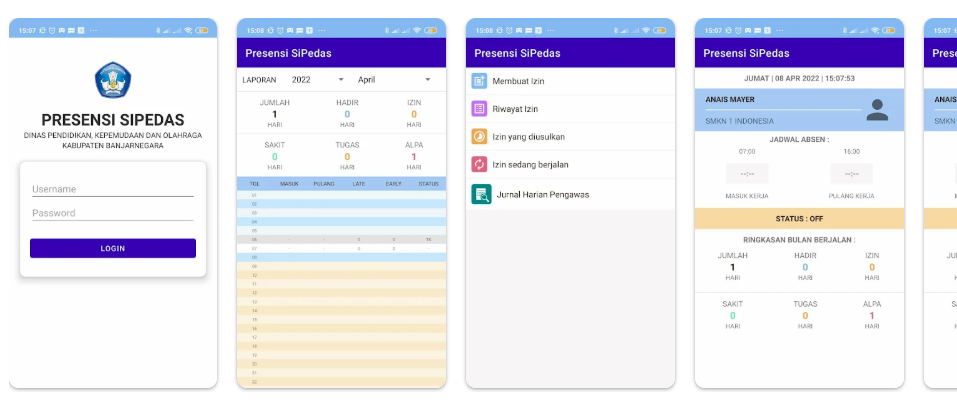

About Me
Hello! I am a vocational high school teacher specializing in Software and Game Development (PPLG) at SMK Negeri 1 Bawang Banjarnegara. I have a strong interest in programming, web development, and project-based learning that encourages students to create meaningful and impactful work. I believe that effective learning is not only about theory but also about meaningful, collaborative practices that are relevant to industry needs. In my daily activities, I enjoy exploring new technologies, developing creative learning media, and collaborating with fellow educators to continuously improve the quality of teaching and learning.
Contact
yuliani@smkn1bawang.sch.id
github.com/yulianidwiasih
@yulianidwiasih7806
linkedin.com/in/yuliani-dwi-asih
Skill
Work Experience
Vocational Teacher (Software and Game Development – PPLG)
Teaching web programming, software development fundamentals, and technology-based digital projects.
Export Customer Service
Establish and maintain strong relationships with customers by effectively handling product or service issues, including clarifying complaints, identifying root causes, and providing the best solutions through appropriate export and import services. Responsible for preparing and verifying documents and reports related to export-import activities, while coordinating with agents to ensure smooth forwarding processes. Demonstrates strong decision-making and problem-solving skills to ensure customer satisfaction and efficient operations.
Laboratory Assistant
Served as a laboratory assistant for courses including Database Systems, Algorithms and Data Structures, Web Programming, and .NET Programming, supporting students in understanding core concepts, guiding practical sessions, assisting with coding and problem-solving, and ensuring effective use of laboratory tools and software during learning activities.
Production Administration Staff
Ensured that production processes ran according to schedule, prepared daily, weekly, and monthly production reports, managed requests for raw materials and coordinated submissions to the Inventory Section, and ensured that overtime hours were carried out effectively and efficiently.
Education
Universitas Pendidikan Indonesia
Universitas Amikom Purwokerto
SMK Negeri 1 Purbalingga
SMP Negeri 3 Purbalingga
SD Negeri 2 Kalimanah Wetan, Purbalingga
Portofolio

Infrastructure Value Calculator
Program to calculate the Social Return on Investment (SROI) Ratio for Wastewater Treatment Plants of Bantul Regency, Yogyakarta

School Website
Developed a modern and responsive school website to support digital information services and school branding.

SiPedas Banjarnegara
SIPEDAS (Smart Monitoring System for School Supervisors’ Performance) is a digital application to monitor the performance of school supervisors, including activity journals, reporting, and visits to supervised schools. The application aims to facilitate supervisors’ tasks through an online system.

Supplementary Textbook for Web Programming
Supplementary textbook for the Web Programming subject in the Software Engineering specialization, designed for vocational high school (SMK/MAK) students in Phase F.

Subject Guide for Basic Vocational Competencies in Software and Game Development (PPLG)
This portfolio showcases my work as a vocational high school teacher in Software and Game Development (PPLG), including teaching materials, lesson plans, student projects, and technology-integrated learning that emphasizes project-based approaches, creativity, and problem-solving aligned with industry needs.